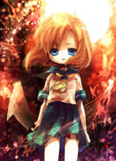

- 恶灵猎人讲述了谷山麻衣是个能在睡梦中预言或感应许多难以理解的事情的少女，在SPR（英国心灵现象调查协会）里做兼职时，与年轻英俊的研究所长和其他伙伴一起调查的故事。而SPR最特别的地方，就是不仅用超能力来解决事情，同时也从科学的角度去探讨挖掘。其所长——涉谷一也是个冷酷英俊、头脑聪明的超级自恋狂，所以也被称为“小恋”（故事的后面与麻衣有产生了微妙的羁绊）。小恋身旁有位谜样的香港人——小林，高大英挺但气质阴沉，对于小恋是忠心耿耿，这样的暧昧组合让人忍不住会朝歪的方向想去，增添不少想像趣味。随着故事的进行，陆陆续续加入了许多同伴，像是和尚、女巫、灵媒以及神父，大家都在不同的案件里发挥所长尽一份力。小野老师的故事本就具有魔力，而透过稻田诗穗的呈现则是将其发挥到极致，画面所表达的感觉很强烈，胆小一点的或许看了会害怕，但最终仍旧会被剧情给牢牢抓住，害怕反倒是其次了。
- 怪谈餐馆在东京郊外的山樱市，历经了开发波涛的冲击后，古老的居住聚集地与新的大厦混杂在了一起。主角大空亚子在那里的一个小小的小学就读小六，在她的班里来了一个美少年转校生——甲本翔。甲本是归国子女，他正在收集世上流传的恐怖故事。 在学校、古老的西洋式建筑、森林中……在亚子他们的身边都泛起了旋涡，发生了各种奇怪的现象。翔也被引到了位于城市边缘的废墟、一个过去被通称为“怪谈餐厅”的地方。那里会拿出什么样的料理目录单呢？？ 其实并没有魔法和怪物什么的出现，但是这些似乎就近在身边。在这样的一个恐怖世界中，许许多多的时代怪谈渐渐被汇集起来。 来吧，大家来和亚子的伙伴们一起瑟瑟发抖吧。
- 鬼公子炎魔故事讲述化生为“炎”的炎魔的使命是狩猎从魔界逃走的“魔”。为了完成这个任务，他与搭档雪鬼姬，情报收集人卡巴艾尔一起来到了人类世界。有一天，炎魔侦探事务所来了一位客人，这个名叫亨利西的男人是在大学教授德国史的教师。他是德国人，有一个日本妻子和一个美丽的女儿，因为女儿罗拉在外出后就再也没有回家，亨利西想要拜托炎魔等人帮忙寻找。另一方面，在罗拉的周围，恐怖的现象在不断发生着，和罗拉有关系的人一个接着一个地被杀害了……帅哥美女版的炎魔和雪鬼姬将会怎么样解决种种的难题呢？
-  寒蝉鸣泣之时-第1季昭和58年夏。有一个远离都市的平静安宁的村庄雏见泽。前原圭一，最近刚刚搬到这个总人口不足2000的小村里。开朗善言的性格让他很快融入了新的班级里。其中关系最好的要数爱照顾人的礼奈，有领导能力的魅音，陷阱高手沙都子，以及身为古手神社巫女的梨花……每日的社团活动让圭一体会到了大城市中所不能体会到的快乐，安宁的村庄让圭一体会到了乡间的安逸和谐。每年6月举行的祭典，“绵流祭”是雏见泽这个村庄一年中最盛大，也是最有趣的祭典。但是，总觉得这个看似平和的村庄中隐藏着什么不可告人的事情。偶尔听到的传言，雏见泽每年绵流都会有一人死亡，而另一人被御社神大人（雏见泽的守护神）鬼隐。昔日的伙伴是否将会成为明日的敌人？究竟还是否能回到以前的日常中去？该怎么样，在能在逐渐逼近的危险中保护自己？事件的真相是什么？凶手是谁？是村子中的黑幕？还是那名所谓的御社神大人？
- 幻影死神 故事以一连串女高中生离奇死亡的事件开始，深阳学园2年C组的女学生宫下藤花原来隐藏著Boogiepop的第二重人格，行为奇异，究竟宫下是否这些死亡事件的主谋呢？ Boogiepop Phantom到底是都市中传说的死神，还是正义的使者？ 这部动画由日本和韩国共同合作,晚于lain一年制作完成。制作上适用了不少相同人员,特别是动画上几乎完全就是那同一批韩国人,自然风格也与lain有很多共通性,在题材上同样也是对人的心理深处的探究,与真实的人性刻画;同时带入人的存在价值等的疑问,是部着力精神上的动画(融入部分变态心理学/精神病学知识),有时不免显得悲哀,也因此,大概由于受众窄的原因,尽管是部优秀的实验动画也同lain的命运一样被埋没多年。
- 尸鬼 尸鬼的首领桐敷沙子梦想建立一个尸鬼的健全社会，不想再被孤立，因此组成了一个不伦不类的家庭，同时在非常适合尸鬼生存的外场里慢慢侵蚀，制造越来越多的尸鬼。 她是人类与尸鬼的综合体。她是尸鬼的女王，有胆识、有智慧，一切的计划都在她计算之内。但明明不是人类的她，却拘泥于人类的道德观，她的理想其实最终还是会使尸鬼走向灭亡。 一切到底是尸鬼们的错，还是人类的错呢？这跟对错无关。 是强者生存的现实世界。同时也充分暴露了人类的愚昧、无知、残酷、暴力、卑贱的真面目。 被“神”遗弃的到底是人类一方，还是尸鬼那一方呢？
-
热门关键词：热血 机战 恐怖 搞笑 神魔 经济 推理 浪漫